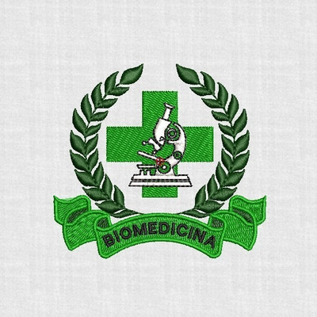
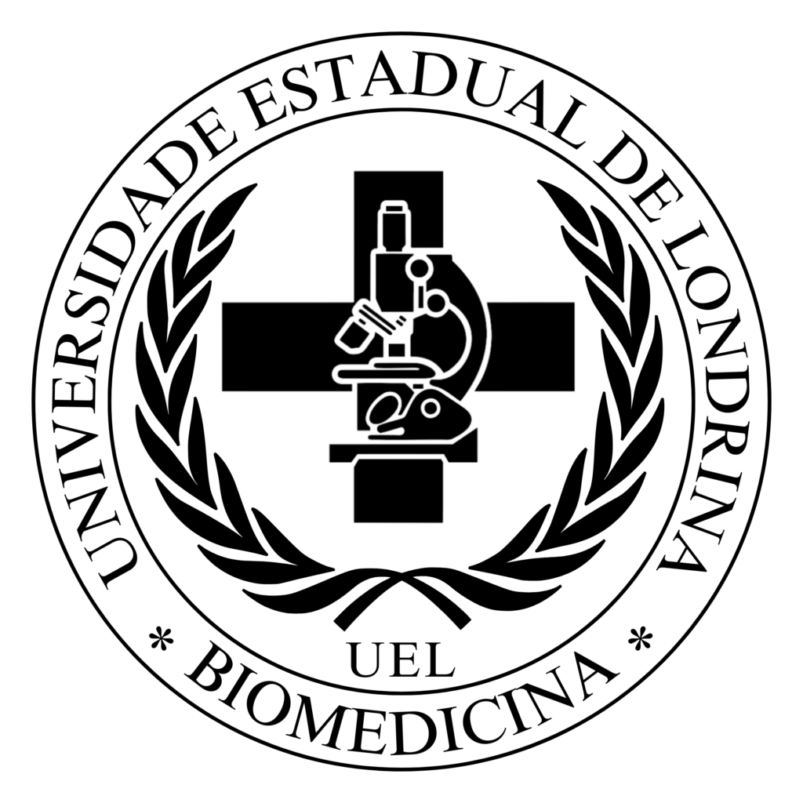

Vestibulinho para curso de Biomedicina
A biomedicina é uma área da ciência que combina conhecimentos de biologia e medicina para estudar doenças humanas, suas causas e mecanismos, e desenvolver métodos de diagnóstico, prevenção e tratamento.
O profissional da área, o biomédico, atua em pesquisa, laboratórios de análises clínicas, desenvolvimento de tecnologias na área da saúde e até mesmo em estética, com foco em procedimentos estéticos não cirúrgicos.
Em outras palavras, a biomedicina busca compreender o funcionamento do corpo humano, tanto em estados saudáveis quanto doentes, com o objetivo de melhorar a saúde e a qualidade de vida das pessoas
Biomedicina é um curso bastante concorrido, especialmente em universidades públicas e instituições de ensino com boa reputação, segundo o site Anhembi e Aprova Total.
A alta procura se deve à crescente demanda por profissionais na área,
impulsionada pelo mercado estético em expansão e pela importância da Biomedicina
em análises clínicas, biotecnologia e pesquisa, de acordo com o site Quero Bolsa.
Para ingressar no curso de Biomedicina, você precisa concluir o ensino médio e passar em um vestibular ou utilizar a nota do Enem (Exame Nacional do Ensino Médio). É importante ter um bom desempenho em Biologia, Química e Física, pois essas matérias são cruciais para a área. Além disso, é recomendado estudar e praticar a redação, pois ela também tem peso na nota final.
O que estudar para o vestibular:
Biologia: Microbiologia, Citologia, Ecologia, Genética, Anatomia e Fisiologia.
Química: Reações orgânicas e inorgânicas, compostos químicos, bioquímica.
Física: Leis da física, termodinâmica.
Redação: Pratique a escrita e fique atento aos temas atuais.
Português, Matemática e Geografia: Essas matérias também são importantes para a nota final.


Farmacia
Odontologia